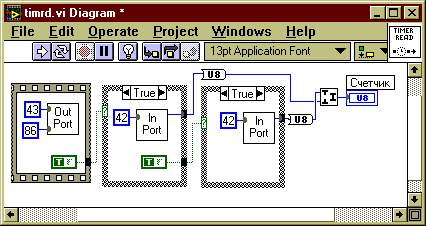

6. Пример использования LabVIEWРяд типичных приемов, используемых при программировании на LabVIEW задач реального времени, проиллюстрируем на конкретном примере.
Встроенный таймер LabVIEW имеет разрешение 1 мс, что позволяет организовывать сбор данных только с частотой порядка 1 кГц. Поэтому для решения задачи целесообразно использование возможностей, предоставляемых аппаратным таймером ПЭВМ. 6.1. Устройство и программирование звуковой картыСовременные звуковые карты представляют собой сложные многофункциональные устройства, содержащие высокоточные (разрядность 16-24 бита) быстродействующие (время преобразования 5-25 мкс) АЦП и ЦАП (см. рисунок 6.1).
Рисунок 6.1. Функциональная схема звуковой карты На этом рисунке: "LINE IN" - линейный вход, "MIC" - вход с микрофона, "LINE OUT" - линейный выход, "SPKR" - выход на наушники или внешние динамики, "Ф" - аналоговые фильтры, "У" - усилители аналоговых сигналов, "DSP" - процессор звуковых сигналов. На DSP возложено большое количество задач по управлению процессами аналогово-цифрового и цифро-аналогового преобразования, по синтезу и обработке звуковых сигналов, по обмену данными с ПЭВМ и пр. В частности, DSP поддерживает ряд сохранившихся еще с младших моделей Creative Soundblaster режимов работы звуковой карты, предусматривающих непосредственный 8-битовый одноканальный ввод-вывод. Программное управление режимами работы DSP осуществляется через порты ввода-вывода (см. таблицу 6.1) при помощи специальных команд (см. таблицу 6.2). По умолчанию базовый адрес области портов ввода-вывода звуковой карты BASE=220h (хотя встречаются значения 230h, 240h и т.п.). Таблица 6.1 Некоторые порты ввода-вывода звуковой карты
Таблица 6.2 Некоторые команды управления DSP
Инициализация DSP состоит из следующих действий (см. рис. 6.2):
Рисунок 6.2. СубВП инициализации DSP Чтение из DSP (см. рисунок 6.3) заключается в том, чтобы:
Рисунок 6.3. СубВП чтения из DSP Аналогично выглядит запись в DSP (см. рисунок 6.4):
Рисунок 6.4. СубВП записи в DSP Разрешение ввода-вывода заключается в посылке в DSP команды 0D1h, а запрещение ввода-вывода - в посылке команды 0D3h. Чтение данных из АЦП звуковой карты складывается из следующих действий:
В противоположность этому, посылка данных на ЦАП звуковой карты заключается в том, чтобы:
6.2. Системный таймер ПЭВМСистемный таймер современных ПЭВМ - это устройство, позволяющее вычислительной системе решать задачи реального времени, а именно:
Функционально системный таймер может быть представлен в виде совокупности трех "каналов", работающих независимо друг от друга (см. рисунок 6.5). Работа каждого из каналов синхронизирована с тактовыми импульсами, поступающими с кварцевого генератора с частотой 1,193 МГц.
Рисунок 6.5. Функциональная схема системного таймера Каждый из каналов может работать в одном из шести режимов. По умолчанию для всех каналов установлен режим №3. В этом режиме каналы работают следующим образом (см. рисунок 6.6):
Рисунок 6.6. Работа каналов таймера в режиме №3 "События" канала 0 заключаются в том, что на контроллер прерываний подаются запросы с приоритетом Irq0 и, соответственно, в системе возникают прерывания с номером 8. Прерывание 8 используется операционной системой Windows для организации вытесняющей многозадачности. "События" канала 1 заключаются в генерации тактовых импульсов, синхронизирующих системные процессы на материнской плате ПЭВМ. "События" канала 2 представляют собой прямоугольные импульсы, подающиеся на вход встроенного компьютерного динамика. Управление работой канала и звучанием динамика осуществляется через порт 61h: бит 0 маскирует поступление в счетчик канала тактовой частоты, а бит 1 - маскирует передачу выходного сигнала канала на динамик. Все три канала являются программируемыми: возможно переключение режимов работы канала, изменение константы пересчета, считывание и загрузка значений счетчиков и пр. Управление таймером осуществляется через порт 43h (см. таблицу 6.3).
Таблица 6.3 Управляющий регистр системного таймера
Обмен данными с каналами счетчика выполняется через порты 40h (нулевой канал), 41h (первый канал), 42h (второй канал). Идея реализации сбора данных в режиме реального времени заключается в том, чтобы запрограммировать канал №2 таймера на работу с требуемой частой, сканировать в цикле значения счетчика и выполнять опрос АЦП в момент его (счетчика) перезагрузки. Инициализация счетчика заключается в следующем (см. рисунок 6.7):
Рисунок 6.7. СубВП инициализации второго таймерного канала Чтение текущего значения счетчика второго канала таймера можно выполнить так:

Рисунок 6.8. СубВП чтения счетчика второго таймерного канала 6.3. Работа с ВП сбора данныхИспользуя разработанные ранее и описанные выше субВП, можно скомпоновать ВП сбора аналоговых данных с использованием звуковой карты (см. рисунки 6.9-6.11). Рисунок 6.9. Лицевая панель ВП 
Рисунок 6.10. Блок-схема ВП Рисунок 6.11. Блок-схема ВП (скрытые фреймы) Примечание. Лицевые панели большинства СубВП, использованных при построении демонстрационного ВП, имеют тривиальный вид, и поэтому на рисунках не отображены. Правила работы с этим ВП следующие. Шаг 1. Подключите на вход звуковой карты источник аналогового сигнала (например, микрофон). Также для проверки результатов работы подключите к выходу звуковой карты наушники или динамик. Шаг 2. Загрузите ВП. Убедитесь, что на вход звуковой карты поступает информативный сигнал и запустите ВП. Через некоторое время, после заполнения буфера данными, на табло появится график оцифрованного сигнала, а в динамике прозвучит "эхо". Примечание. На входе звуковых карт ставятся фильтры нижних частот, поэтому использование их АЦП целесообразно только для измерения сигналов с частотами выше 20 Гц. (с) Constantin E. Climentieff aka DrMad, mailto: drmad@dr.com * http://www.chat.ru/~drmad |